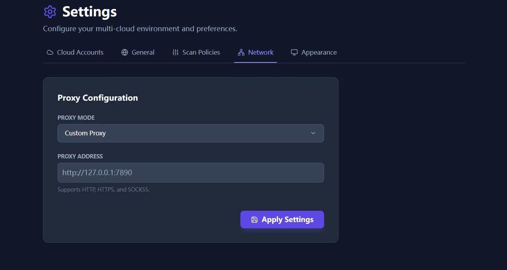

Many cloud tools still classify idle with one fixed CPU threshold. It is simple. It also misclassifies both waste and critical background workloads more often than people admit.
If a server sits at 4% CPU, it must be doing something. That sounds reasonable until you look at the size and price of the machine behind the number.
Why the shortcut fails
Take a c5.4xlarge. If it runs at a steady 6% CPU, a blunt threshold may call it healthy. Budget-wise, that can still be a poor trade. You might be paying for 16 vCPUs to support work that belongs on a much smaller class.
The opposite error is just as dangerous. A tiny service running at 1% CPU may still be critical. If a cleanup rule treats every low-usage machine as disposable, the operator ends up with false confidence and the environment absorbs the risk.

What the policy engine changes
The policy engine replaces one-size logic with a combination of thresholds and windows that teams can actually defend:
- CPU thresholds: useful for spotting oversized compute classes.
- Network thresholds: helpful for detecting machines that churn but serve little real traffic.
- Lookback periods: important for batch jobs and monthly workloads that should not be misread from a short window.
The result is not perfect certainty. It is a better starting point for review, with fewer false positives and fewer missed downgrade opportunities.

Enterprise networks still need a clean path out
Finding waste is pointless if the scanner cannot reach provider APIs. That is why proxy support remains part of the real-world story here. Enterprise teams often run these reviews behind strict network controls, and the product has to work inside that boundary instead of pretending it does not exist.

If you are rolling this into a restricted enterprise network, follow Network Proxy Setup for Restricted Environments. For deeper cross-resource analysis after policy tuning, continue with Deep FinOps Anatomy.